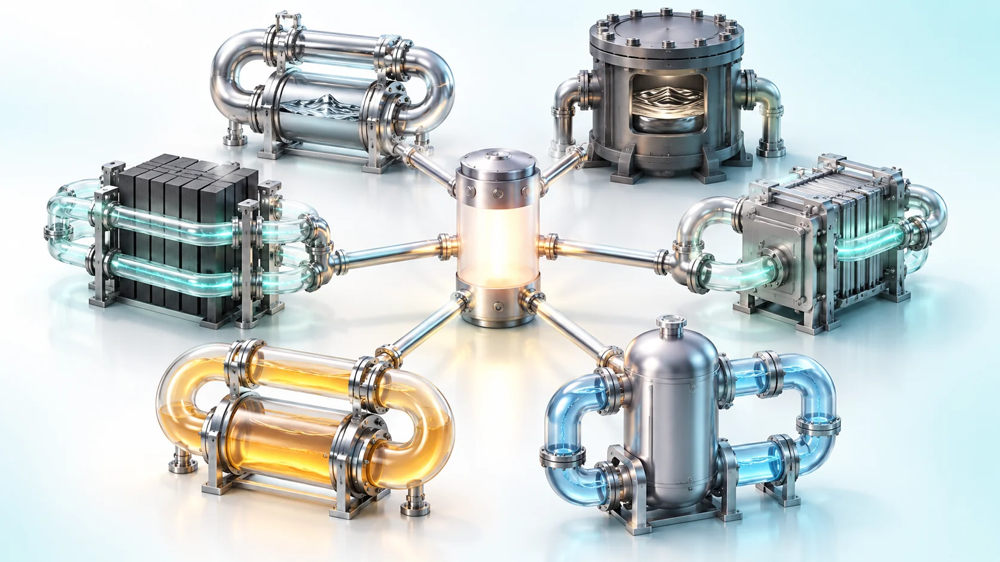
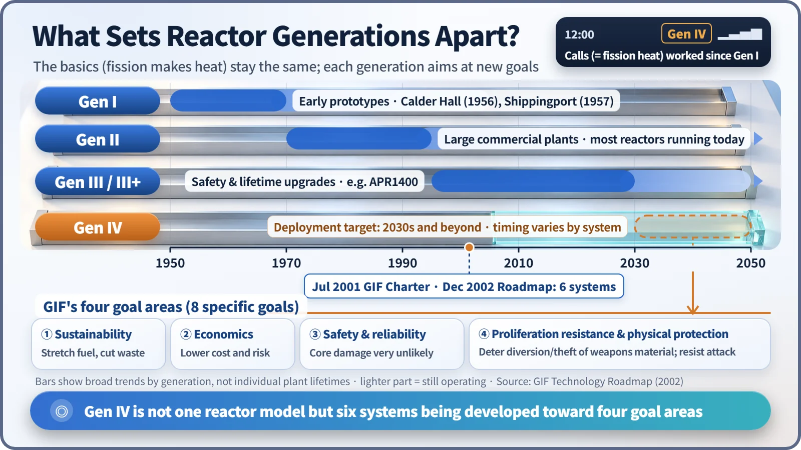
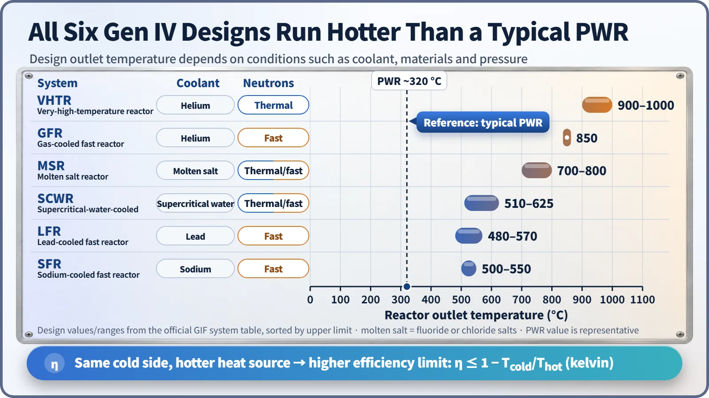

Society, Environment & the Future · 296
From 2G to 5G, You Could Always Make a Call — What a Generation IV Reactor Really Is
Fission still makes the heat. What changes is the coolant, the neutrons and what the heat can do: six candidates racing toward four shared goals.

"Generation IV" is not the name of one reactor. It is a set of goals agreed through the Generation IV International Forum (GIF), together with six candidate reactor systems being developed toward those goals in parallel. The basic job, turning fission heat into useful energy, stays the same; what changes is what each design tries to do better. [1]
Think of phone generations and you're halfway there
From a 2G handset to a 5G smartphone, one thing never changed: you could always make a phone call. What changed was how fast data moved and what you could do with it.
Reactors work the same way. Since the very first generation, the basics have stayed put: fission makes heat, and that heat makes electricity. What separates the generations is what each one tries to do better.
- Generation I (1950s–60s): early prototypes built to prove nuclear power could work at all. Calder Hall in the UK (1956) and Shippingport in the US (1957) are the classic examples.
- Generation II (1970s–90s): most of the commercial nuclear plants running in the world today. Light water reactors, which use ordinary water both to cool the core and to slow down neutrons, are the workhorse.
- Generation III and III+ (1990s onward): refined versions of Generation II, with better safety, longer lifetimes and more standardization. South Korea's APR1400 is usually placed in this group.
- Generation IV (deployment targeted for the 2030s and beyond): a leap that changes the reactor's basic ingredients themselves, such as the coolant and the kind of neutrons it runs on.

The analogy has one limit, though. 5G is a single communications standard. Generation IV is not one standard; it is closer to a race with six candidates running side by side.
Who set the goals, and what are they?
In July 2001, nine countries, South Korea among them, founded the Generation IV International Forum (GIF). China, Russia, the European Atomic Energy Community (Euratom) and others joined later, and today a dozen or so countries and organizations take part. At the end of 2002, after reviewing more than 100 candidate concepts, GIF set out four goal areas. [2]
- Sustainability: use uranium far more efficiently and reduce the burden of waste that must be managed for a long time.
- Economics: compete with other energy sources on whole-life cost, with financial risk comparable to other energy projects.
- Safety and reliability: make damage to the core (the central region where the fuel sits) very unlikely, and aim for a level where no off-site emergency response for nearby residents is needed.
- Proliferation resistance and physical protection: make it very hard to divert material for weapons, and strengthen protection against outside threats.
One point is worth underlining: these are goals. They do not mean the six candidates have already achieved them all.
Six candidates: what sets them apart?
Two things distinguish the candidates. The first is the coolant that carries the heat away. The second is whether the neutrons that cause fission are slow (thermal neutrons) or fast. Keeping neutrons fast instead of slowing them down opens a path to using uranium dozens of times more efficiently.
| System | Coolant | Neutrons | Design outlet temperature |
|---|---|---|---|
| Sodium-cooled fast reactor (SFR) | Liquid sodium metal | Fast | 500–550 °C |
| Lead-cooled fast reactor (LFR) | Liquid lead | Fast | 480–570 °C |
| Gas-cooled fast reactor (GFR) | Helium gas | Fast | 850 °C |
| Very-high-temperature reactor (VHTR) | Helium gas | Thermal | 900–1000 °C |
| Molten salt reactor (MSR) | Fluoride or chloride salt | Thermal or fast | 700–800 °C |
| Supercritical-water-cooled reactor (SCWR) | Supercritical water | Thermal or fast | 510–625 °C |
The supercritical-water reactor still uses water, but at pressures and temperatures so high that the difference between liquid and gas disappears. The very-high-temperature reactor is the hottest of the six. [1]

The reactor outlet temperature of today's pressurized water reactors (PWRs) is around 320 °C, and the design outlet temperatures of all six candidates are higher than that. Each temperature is the result of design conditions working together: the coolant, the materials and the pressure.
Why would anyone want it that hot?
Any machine that turns heat into electricity has an efficiency ceiling it cannot break:
Efficiency limit: η = 1 − Tcold ÷ Thot
Here η (eta) is the efficiency, Thot is the temperature of the hot side where heat comes in, and Tcold is the temperature of the cold side where heat is rejected. Both are entered as absolute temperatures, in kelvin. Keep the cold side at about 27 °C and put the reactor outlet temperature on the hot side: at 320 °C the ceiling is about 49%, and at 950 °C it climbs to about 75%.
This is only a theoretical ceiling; real power-plant efficiency is far lower. Still, a higher outlet temperature leaves more room to squeeze electricity out of the same heat, and it makes the heat usable for high-temperature processes such as hydrogen production. That is exactly where high-temperature gas reactors and hydrogen come into the picture.
So where do things stand today?
The six candidates are at very different stages. Sodium-cooled fast reactors have by far the most real operating experience, for example Russia's BN-600 (in operation since 1980) and BN-800 (commercial operation in 2016). In December 2023, China began commercial operation of its high-temperature gas-cooled reactor HTR-PM. Its outlet temperature is about 750 °C, still short of the VHTR target, so it is best seen as a stepping stone. Russia's lead-cooled fast reactor BREST-OD-300 began construction in 2021, but its start-up date has slipped several times. Gas-cooled fast reactors and supercritical-water-cooled reactors are still in research and development.
Each also has its own homework. Sodium reacts violently with water, lead is heavy and corrodes metals, and materials that can withstand 900 °C are hard to make. [3]
Two misconceptions to clear up
"Generation IV means small modular reactors (SMRs)." No. SMR is a concept about size and factory fabrication; Generation IV is a concept about coolant, neutrons and goals. Some designs are both, but many SMRs are based on familiar light-water technology.
"Once a new generation arrives, the old plants are dangerous relics." A generation is simply a lineage of design philosophy. Any plant operating today, whatever its generation, has to meet the regulator's safety standards to keep running.
Key takeaways
"Generation IV reactor" is the name for a shared goal (use the same fission heat with fuel stretched further, a lighter waste burden, sturdier safety and hotter output) and for the six candidates racing toward it. Just as you could always make a call from 2G to 5G, fission, the heart of the reactor, stays the same. What changes is how much more that heat can do.